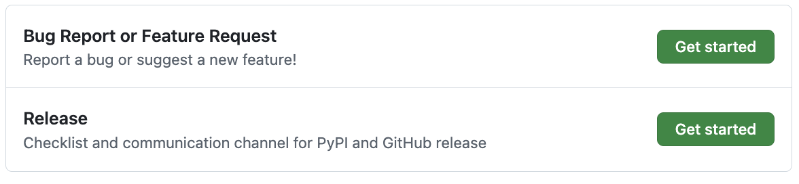
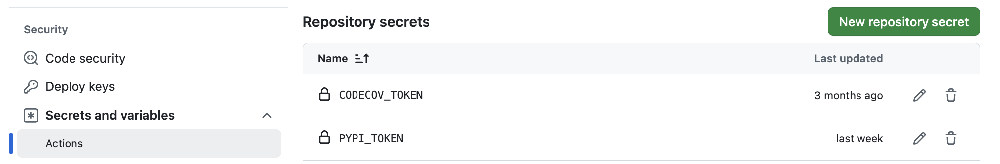
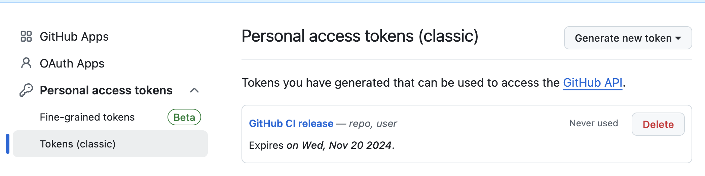
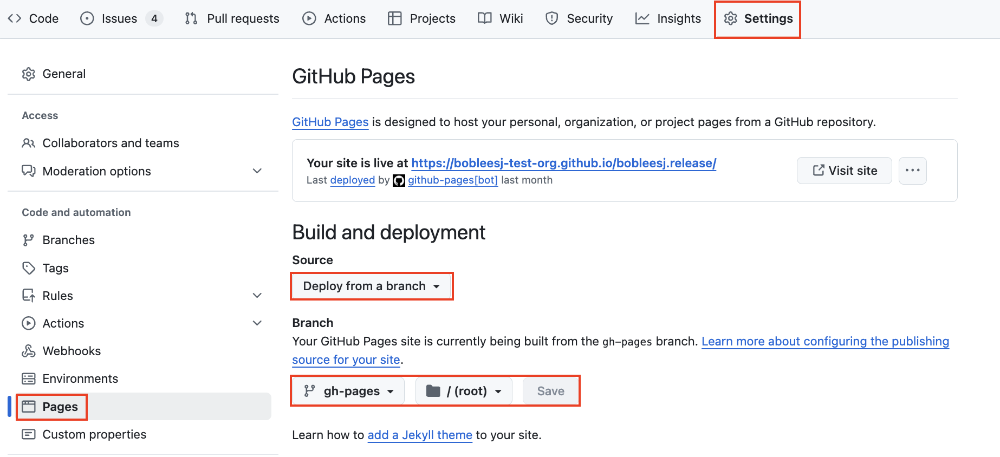

Release package to GitHub and PyPI
Overview
In this guide, you will learn to release your source code to GitHub and PyPI so that by the end of the guide, you can install your package via pip install <package-name>.
PyPI/GitHub release
Important
Make sure you have your project is standarlized with scikit-package up to Level 5. Otherwise, please start from the Getting started page here.
In the repository, create an issue on GitHub with the “Release” option as shown below:

Check off all items in the first checklist for PyPI/GitHub release.
Proceed to the next section.
{kind=link}
Instructions for Project Owner for PyPI/GitHub release for the first time
Review the release GitHub issue created in the previous step.
Set
PYPI_TOKENandPAT_TOKENare configured at the organization or repository level by following the instructions in Appendix 1, 2, respectively.Setup GitHub pages at the repository level by following the instructions in Appendix 3.
Confirm the
github_admin_usernamesection in.github/workflows/build-wheel-release-upload.ymlis that of the project owner.In your terminal, run
git checkout main && git pull upstream mainto sync with the main branch.Run the following:
# For pre-release, use *.*.*rc* e.g., 1.0.0rc0 # For release, use *.*.* e.g., 1.0.0 git tag <version-number>_rc git push upstream <version-number>_rc
Done! Once the tag is pushed, visit the
Actionstab in the repository to monitor the CI progress.You will see that the GitHub Actions workflow is triggered and the package is built and uploaded to PyPI and GitHub.
For
pre-release, it will not update the documentation on GitHub Pages. It will also not update the changelog.
Release your package for PyPI/GitHub release after pre-release
In your terminal, run
git checkout main && git pull upstream mainto sync with the main branch.Run the following:
# For release, use *.*.* e.g., 1.0.0 git tag <version-number> git push upstream <version-number>
Notice that the documentation is deployed. It will also update the
CHANGELOG.rst.Now that you have your source code uploaded to
PyPI, we will then now provide a conda package as well.
Release conda-forge package
To support conda install <package-name>, for your package, follow the instructions here.
Appendix 1. Setup PYPI_TOKEN to allow GitHub Actions to upload to PyPI
Generate a PyPI API token from pypi.org:
Visit https://pypi.org/manage/account/ and log in.
Scroll down to the
API tokenssection and clickAdd API token.Set the
Token nametoPYPI_TOKEN.Choose the appropriate
Scopefor the token.Click
Create tokenand copy the generated token.
Add the generated token to GitHub:
Navigate to the
Settingspage of the org (or repository).Click the
Actionstab underSecrets and variables.Click
New org secret, name itPYPI_TOKEN, and paste the token value.Done!
{kind=link}

Appendix 2. Setup PAT_TOKEN to allow GitHub Actions to compile CHANGELOG.rst
Recall that dring a release (not pre-release) process, the GitHub Actions workflow compiles the news items in the CHANGELOG.rst file in the main branch. Hence, the GitHub workflow needs to link with this privilege through a personal access token (PAT) of the project owner.
Click
Generate new tokenand choose the classic option.Under
Note, write, “GitHub CI release”Set the Expiration date of the token.
Under
Select scopes, checkrepoanduser.Scroll down, click
Generate token.Done!
{kind=link}

Copy and paste the PAT_TOKEN to your GitHub organization:
Visit
Settingsin the organization.Click the
Actionstab underSecrets and variables.Click
New organization secretand add a new secret and name it asPAT_TOKEN.Done!
Appendix 3. Host documentation online with GitHub Pages
The goal is to host the official documentation online i.g., https://diffpy.github.io/diffpy.utils using GitHub Pages.
Visit the
Settingspage in your repository and and clickpagesunderCode and automation.Click
Deploy from a branchunderSource. Below, choosegh-pagesbranch and/(root)and clickSave. See the image below.
Done! Wait a few minutes and visit your GitHub Pages URL!